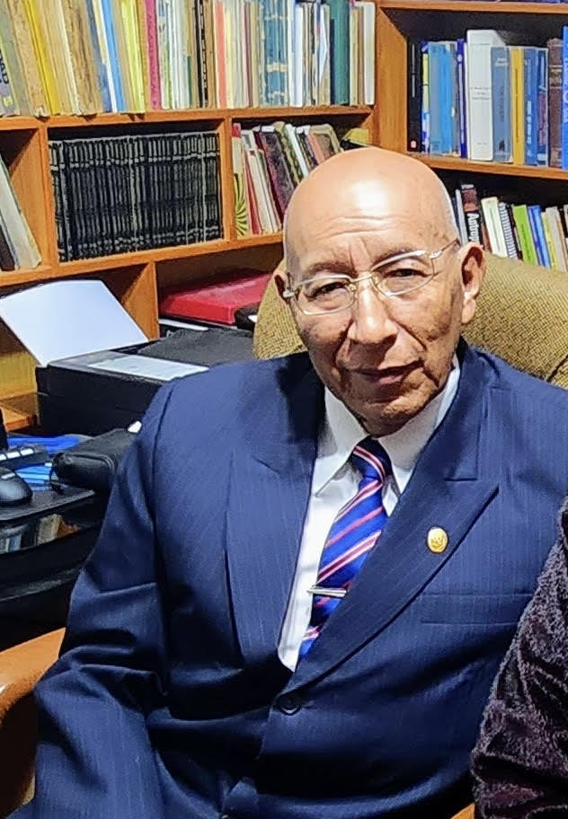

Asesoría de Tesis
Acompañamiento personalizado en todas las etapas de la investigación académica: desde la elección del problema hasta la sustentación exitosa.
Consultar servicio
Especialista en Historia Peruana · Investigador Científico
Catedrático Universitario · Experto en Acreditación
"La historia no es solo el pasado que heredamos; es la brújula que orienta el presente y la semilla que germina en el futuro de un pueblo."
El Dr. Nicéforo Bustamante Paulino es Doctor en Educación y reconocido investigador de la historia y cultura de la región Huánuco, Perú. Su obra científica ha contribuido significativamente al conocimiento de las civilizaciones prehispánicas y su legado en la identidad peruana contemporánea.
Como catedrático universitario de alto nivel, ha formado a cientos de profesionales e investigadores, guiándolos con rigor metodológico y profundo compromiso académico. Su especialización en la Cultura Guanuco, la Nación Chupaychu y la Nación Yacha lo posiciona como referente nacional en historia regional andina.
Adicionalmente, es especialista en Gestión de Calidad y Acreditación Universitaria, habiendo acompañado a diversas instituciones peruanas en sus procesos de evaluación y mejora continua bajo los estándares del SINEACE.
Más de 27 años de docencia universitaria respaldados por un historial verificable de publicaciones, investigaciones, eventos académicos y reconocimientos institucionales en la Universidad Nacional Hermilio Valdizán de Huánuco.
Formación complementada con 11 diplomados/especializaciones y 7 capacitaciones — ver pestaña Diplomados y Capacitaciones.
Docente Principal a Dedicación Exclusiva, condición nombrado. Asesor de 10 tesis de pregrado, segunda especialidad, maestría y doctorado (2012–2025). A su cargo los cursos universitarios: Trabajos de Investigación, Evaluando y Reflexionando sobre la Historia Nacional y Mundial y Desarrollando la Prospectiva Histórica del Perú y el Mundo.
Acompañamiento académico de alto nivel para estudiantes, investigadores e instituciones universitarias del Perú.
Acompañamiento personalizado en todas las etapas de la investigación académica: desde la elección del problema hasta la sustentación exitosa.
Consultar servicioSesiones de alto nivel sobre Historia Peruana e Investigación Científica, diseñadas para estudiantes de posgrado y profesionales en formación.
Consultar servicioPonencias presenciales y virtuales para universidades, institutos y organizaciones sobre Historia Peruana, Investigación Científica y Educación.
Consultar servicioDiseño metodológico, validación de instrumentos, análisis estadístico y acompañamiento para publicación en revistas científicas indexadas.
Consultar servicioEspecialista en procesos de acreditación de universidades peruanas bajo los estándares del SINEACE. Diagnóstico institucional, diseño de planes de mejora y acompañamiento integral.
Investigaciones académicas sobre la historia y cultura de la región Huánuco, referentes para el estudio de las civilizaciones andinas del Perú.

Investigación exhaustiva sobre la Cultura Yacha, sus estructuras sociales, políticas y culturales en el contexto andino prehispánico de la región Huánuco.
Consultar disponibilidad
Estudio profundo sobre la Nación Chupaychu, su organización social, tributación incaica y su rol en la dinámica política del Tawantinsuyo.
Consultar disponibilidad
Análisis riguroso de la Nación Guanuco, sus territorios, costumbres y aportaciones a la civilización andina en la sierra central del Perú.
Consultar disponibilidad★★★★★"El Dr. Bustamante transformó mi forma de entender la investigación científica. Su guía fue determinante para que mi tesis doctoral obtuviera la mención Sobresaliente. Un maestro excepcional."
★★★★★"Participé en su conferencia sobre la Cultura Huanuqueña y quedé impresionado por la profundidad de su conocimiento y su capacidad para conectar el pasado con los desafíos educativos actuales."
★★★★★"Gracias a la consultoría del Dr. Bustamante, nuestra universidad logró la acreditación institucional en tiempo récord. Su experiencia en los procesos SINEACE es invaluable."
Reflexiones sobre historia peruana, metodología de investigación y educación universitaria.
Un análisis de cómo las tradiciones y estructuras de la Cultura Guanuco perviven en la cosmovisión y prácticas culturales de la región Huánuco contemporánea.
Guía práctica para identificar y corregir los errores más comunes que cometen los investigadores al diseñar sus estudios de maestría y doctorado.
Una revisión de los criterios fundamentales del SINEACE y las estrategias de gestión de calidad que garantizan el éxito en los procesos de acreditación institucional.
Estoy disponible para asesorías, conferencias, consultoría y cualquier colaboración académica. Escríbeme y te responderé a la brevedad.
WhatsApp / Teléfono
+51 962 640 741Ubicación
Huánuco, Perú